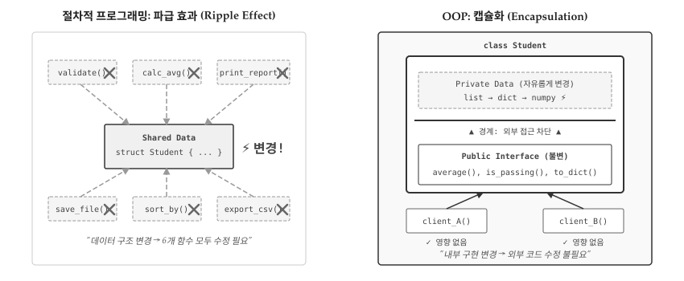
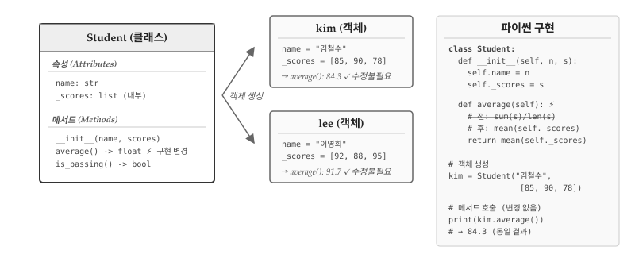
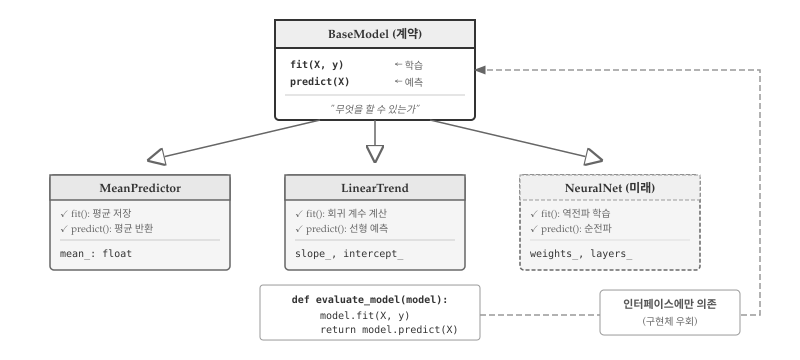
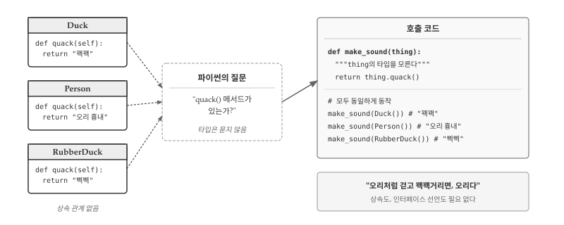
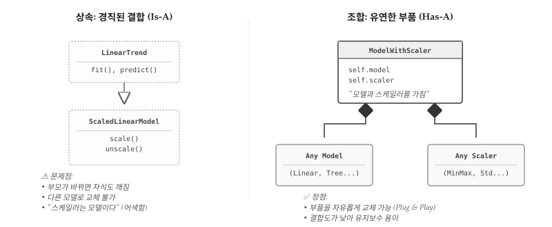
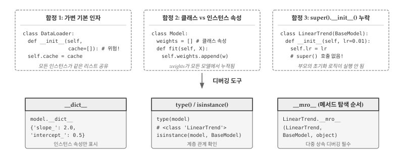

1960년대 후반, 소프트웨어 산업은 위기에 직면했다. 하드웨어 성능은 기하급수적으로 향상되었지만, 소프트웨어 개발은 그 속도를 따라가지 못했다. 프로젝트는 예산을 초과하고, 일정은 지연되며, 납품된 시스템은 버그투성이였다. 1968년 NATO 컨퍼런스에서 이 현상에 소프트웨어 위기(Software Crisis)라는 이름이 붙었다. 문제의 핵심은 명확했다: 절차적 프로그래밍으로는 대규모 시스템의 복잡성을 감당할 수 없었다.
앞 장에서 살펴본 학생 관리 예제가 바로 그 축소판이다. 학생 100명을 관리하려면 300개의 변수가 필요했고, student47_name과 student47_scores가 같은 학생을 가리킨다는 보장이 없었다. 함수를 추가할수록 어떤 함수가 어떤 데이터를 건드리는지 파악하기 어려워졌다. 한 곳을 수정하면 예상치 못한 곳에서 버그가 터졌다. 프로그램이 커질수록 복잡성은 선형이 아니라 기하급수적으로 증가했다.

그림 33.1: 객체지향의 핵심: 변경의 지역화
객체지향 프로그래밍(OOP)은 복잡성을 분할하기 위해 탄생했다. 1967년 노르웨이에서 Ole-Johan Dahl과 Kristen Nygaard가 만든 Simula가 시초다. 항만 시뮬레이션을 개발하면서 배, 고객, 창고를 각각 독립된 단위로 묶었더니 시스템 전체를 한꺼번에 이해하지 않아도 됐다. 배의 동작을 수정해도 창고 코드는 건드릴 필요가 없었다. 복잡한 시스템을 변경해도 영향 범위가 제한되는 구조—바로 여기서 OOP의 핵심 가치가 드러난다.
33.1 변경의 지역화
OOP의 진짜 목적은 코드 재사용이 아니다. 상속을 통한 재사용은 OOP의 부산물일 뿐, 핵심 가치는 변경의 지역화(Localization of Change)다. 잘 설계된 객체는 내부 구현이 바뀌어도 외부 인터페이스가 유지된다. 100군데에서 호출되는 코드를 수정할 때, 캡슐화가 잘 되어 있으면 한 곳만 고치면 된다.
앞 장의 학생 문제를 OOP로 해결해보자. 절차적 방식에서는 데이터(scores)와 함수(get_average())가 분리되어 있었다. 평균 계산 방식을 바꾸려면 get_average() 함수를 찾아 수정해야 하는데, get_average()가 학생 점수 외에 다른 데이터에도 사용되고 있다면 영향 범위를 파악하기 어렵다.
class Student:"""학생 데이터와 관련 연산을 하나로 묶는다"""def__init__(self, name, scores):self.name = nameself._scores = scores # 내부 구현: 리스트def average(self):returnsum(self._scores) /len(self._scores)def is_passing(self, threshold=60):returnself.average() >= threshold# 데이터와 연산이 하나의 단위로 묶였다kim = Student("김철수", [85, 90, 78])lee = Student("이영희", [92, 88, 95])print(f"{kim.name}: {kim.average():.1f}")print(f"{lee.name}: {lee.average():.1f}, 합격: {lee.is_passing()}")
김철수: 84.3
이영희: 91.7, 합격: True
_scores에 언더스코어를 붙인 건 “내부 구현”이라는 신호다. 외부에서는 average()와 is_passing() 메서드만 사용하면 된다. 나중에 점수 저장 방식을 리스트에서 딕셔너리로 바꾸거나, 가중 평균으로 계산 로직을 변경해도 외부 코드는 수정할 필요가 없다. 변경이 Student 클래스 내부에 지역화된 것이다.

그림 33.2: 클래스 경계: 인터페이스와 구현의 분리
그림 33.2 는 변경의 지역화가 실제로 어떻게 작동하는지 보여준다. average() 메서드의 내부 구현이 sum(s)/len(s)에서 mean(self._scores)로 바뀌었다고 가정하자. 클래스 정의에서 average() 메서드 한 곳만 수정하면 된다. kim 객체와 lee 객체는 여전히 kim.average()를 호출하고, 결과값 84.3과 91.7도 동일하게 반환된다. 외부 코드는 수정할 필요가 없다. 만약 average()를 100군데에서 호출하고 있었다면, 절차적 방식에서는 100군데를 일일이 확인해야 했겠지만, 캡슐화된 클래스에서는 한 곳만 고치면 된다. 이것이 OOP가 대규모 시스템에서 유지보수를 가능하게 만드는 핵심 원리다.
노트self의 정체
파이썬 초보자가 가장 혼란스러워하는 부분이 self다. 메서드 정의에는 self가 있는데, 호출할 때는 전달하지 않는다. 비밀은 파이썬이 자동으로 변환한다는 점에 있다. kim.average()를 호출하면 파이썬은 내부적으로 Student.average(kim)으로 바꾼다. self는 “호출한 객체 자신”을 가리키는 관례적 이름일 뿐, this나 me로 써도 동작한다. 다만 파이썬 커뮤니티의 강력한 관습이므로 self를 고수하라. 메서드는 일반 함수와 다르지 않다—단지 첫 번째 인자로 객체를 받도록 설계된 함수일 뿐이다.
33.2 인터페이스: 계약으로 설계
앞 절에서 average() 메서드의 내부 구현을 바꿔도 외부 코드가 영향받지 않는다고 했다. 그런데 한 가지 전제가 있다. average()라는 메서드 이름, 매개변수, 반환값 타입이 그대로 유지되어야 한다. 만약 메서드 이름을 calc_avg()로 바꾸거나, 반환값을 float에서 dict로 바꾼다면? kim.average()를 호출하던 100군데 코드가 모두 깨진다. 변경의 지역화가 작동하려면 안정된 인터페이스가 전제 조건이다.
인터페이스는 “이 객체가 무엇을 할 수 있는가”를 정의하는 계약(Contract)이다. 계약은 구현 방법이 아니라 약속을 명시한다. “이 객체에 average()를 호출하면 float를 반환한다”는 약속이 계약이다. 내부에서 sum()/len()을 쓰든 statistics.mean()을 쓰든 numpy.mean()을 쓰든 상관없다. 계약만 지키면 외부 코드는 깨지지 않는다. 반대로 말하면, 인터페이스를 함부로 바꾸면 변경의 지역화가 무너진다. 인터페이스 설계에 시간을 투자해야 하는 이유다.
데이터 과학에서 가장 성공적인 인터페이스 사례가 scikit-learn의 fit()과 predict()다. 수백 개의 모델이 같은 계약을 따른다. model.fit(X, y)로 학습하고 model.predict(X)로 예측한다. 내부 알고리즘이 선형 회귀든, 결정 트리든, 신경망이든 사용법은 동일하다. 덕분에 모델을 교체해도 파이프라인 코드를 수정할 필요가 없다.
class BaseModel:"""모델 인터페이스 정의: fit()과 predict() 계약"""def__init__(self):self.is_fitted =Falsedef fit(self, X, y):"""학습 데이터로 모델을 훈련한다"""raiseNotImplementedError("구현 필요")def predict(self, X):"""새 데이터에 대해 예측한다"""ifnotself.is_fitted:raiseRuntimeError("fit()을 먼저 호출하세요")returnself._predict(X)def _predict(self, X):raiseNotImplementedError("구현 필요")
BaseModel은 구체적인 알고리즘을 구현하지 않는다. 대신 “모든 모델은 fit()과 predict()를 가져야 한다”는 계약을 선언한다. 실제 구현은 자식 클래스가 담당한다.
class MeanPredictor(BaseModel):"""가장 단순한 모델: 항상 평균값 예측"""def fit(self, X, y):self.mean_ =sum(y) /len(y)self.is_fitted =Truereturnselfdef _predict(self, X):return [self.mean_] *len(X)class LinearTrend(BaseModel):"""단순 선형 추세 모델"""def fit(self, X, y): n =len(X) sum_x, sum_y =sum(X), sum(y) sum_xy =sum(x * yi for x, yi inzip(X, y)) sum_xx =sum(x * x for x in X)self.slope_ = (n * sum_xy - sum_x * sum_y) / (n * sum_xx - sum_x **2)self.intercept_ = (sum_y -self.slope_ * sum_x) / nself.is_fitted =Truereturnselfdef _predict(self, X):return [self.slope_ * x +self.intercept_ for x in X]
MeanPredictor는 단순히 평균을 반환하고, LinearTrend는 선형 회귀를 수행한다. 내부 구현은 완전히 다르지만 인터페이스는 동일하다. 두 모델을 실제로 사용해보자.
# 학습 데이터: x=시간, y=매출X = [1, 2, 3, 4, 5]y = [10, 22, 28, 41, 52]# MeanPredictor: 평균만 예측mean_model = MeanPredictor()mean_model.fit(X, y)print(f"MeanPredictor 예측: {mean_model.predict([6, 7])}")# LinearTrend: 선형 추세 예측linear_model = LinearTrend()linear_model.fit(X, y)print(f"LinearTrend 예측: {[f'{p:.1f}'for p in linear_model.predict([6, 7])]}")
두 모델 모두 fit(X, y)로 학습하고 predict(X)로 예측한다. 호출 방식이 동일하므로 모델을 교체해도 사용하는 쪽 코드는 수정할 필요가 없다.

그림 33.3: 인터페이스: 계약과 구현의 분리
그림 33.3 는 계약으로서의 인터페이스가 어떻게 작동하는지 보여준다. 상단의 BaseModel이 계약이다. “이 객체는 fit()과 predict()를 제공한다”라는 약속만 정의하고, 구체적인 구현은 비워둔다. 하단의 MeanPredictor, LinearTrend, 그리고 미래에 추가될 NeuralNet은 각각 계약을 이행하는 구현체다. MeanPredictor는 평균을 저장하고, LinearTrend는 회귀 계수를 계산하며, NeuralNet은 역전파로 가중치를 학습한다. 내부 알고리즘은 완전히 다르지만, 외부에서 보면 모두 “학습하고 예측하는 객체”일 뿐이다.
핵심은 하단의 evaluate() 함수다. model.fit(X, y); model.predict(X)라는 두 줄만 작성하면 어떤 모델이든 동작한다. MeanPredictor를 전달하든 LinearTrend를 전달하든 evaluate() 코드는 수정할 필요가 없다. 내년에 NeuralNet을 추가해도 마찬가지다. 계약만 지키면 클라이언트 코드는 영향받지 않는다. 인터페이스가 확장에는 열려 있고, 수정에는 닫혀 있는 구조를 만드는 것이다.
33.3 다형성
앞 절에서 인터페이스를 “계약”이라고 정의했다. 다형성(Polymorphism)은 그 계약의 실행 시점 해석이다. 컴파일 시점에는 model.predict()가 어떤 코드를 실행할지 결정되지 않는다. 런타임에 model 변수에 실제로 담긴 객체가 무엇인지에 따라 실행 경로가 달라진다. 인터페이스가 “무엇을 할 수 있는가”를 정의한다면, 다형성은 “같은 호출이 상황에 따라 다르게 동작한다”는 것을 보장한다.
# 학습 데이터X_train = [1, 2, 3, 4, 5]y_train = [2.1, 4.0, 5.9, 8.1, 10.0]X_test = [6, 7, 8]# 런타임에 어떤 모델인지 결정된다models = [MeanPredictor(), LinearTrend()]for model in models: model.fit(X_train, y_train) preds = model.predict(X_test)print(f"{model.__class__.__name__}: {[f'{p:.1f}'for p in preds]}")
동일한 model.predict(X_test) 호출이 첫 번째 반복에서는 평균값을 반환하고, 두 번째 반복에서는 선형 회귀 예측값을 반환한다. 코드를 작성할 때가 아니라 실행할 때 동작이 결정된다. 이 유연함이 플러그인 아키텍처, 전략 패턴, 의존성 주입의 기반이 된다. 설정 파일이나 사용자 입력에 따라 알고리즘을 동적으로 교체할 수 있다.
다형성이 주는 진짜 이점은 조건 분기의 제거다. 다형성 없이 여러 모델을 처리하려면 if-elif-else 사슬이 필요하다.
# 다형성 없이: 타입마다 분기def predict_without_polymorphism(model_type, X):if model_type =="mean":return [mean_value] *len(X)elif model_type =="linear":return [slope * x + intercept for x in X]elif model_type =="neural":return neural_forward(X)# 새 모델 추가 시 여기를 수정해야...
모델이 추가될 때마다 이 함수를 수정해야 한다. 반면 다형성을 사용하면 model.predict(X) 한 줄로 끝난다. 새 모델이 추가되어도 호출 코드는 건드리지 않는다. 열린-닫힌 원칙(Open-Closed Principle)—확장에는 열려 있고, 수정에는 닫혀 있다—이 실현되는 방식이다.
열린-닫힌 원칙은 1988년 버트란드 마이어(Bertrand Meyer)가 『객체지향 소프트웨어 구성』[1]에서 처음 명명했다. 이후 로버트 마틴(Robert C. Martin)이 『애자일 소프트웨어 개발』[2]에서 SOLID 원칙의 두 번째 글자 ’O’로 정립하면서 널리 알려졌다. 핵심 통찰은 기존 코드를 수정하지 않고도 시스템을 확장할 수 있어야 한다는 것이다. 수정은 버그를 만들고, 테스트를 무효화하며, 의존하는 모든 코드에 파급된다. 반면 확장은 새 코드를 추가할 뿐 기존 코드를 건드리지 않는다.
OOP에서 열린-닫힌 원칙이 자연스럽게 구현되는 이유는 다형성 덕분이다. 인터페이스를 정의하고 구현체를 분리하면, 새 구현체를 추가해도 인터페이스를 사용하는 코드는 변경할 필요가 없다. BaseModel을 사용하는 수백 개의 함수가 있어도 NeuralNet 클래스를 추가하는 순간 모든 함수에서 동작한다. 기존 함수를 열어서 elif model_type == "neural"을 추가할 필요가 없다.
다른 패러다임에서도 유사한 개념이 존재한다. 함수형 프로그래밍에서는 고차 함수(Higher-Order Function)가 비슷한 역할을 한다. 동작을 함수로 전달받으면 기존 함수를 수정하지 않고 새 동작을 주입할 수 있다. 파이썬의 sorted(data, key=fn)가 예시다—정렬 알고리즘은 그대로 두고 key 함수만 바꿔서 정렬 기준을 확장한다. 절차적 프로그래밍에서는 함수 포인터나 콜백으로 유사하게 구현할 수 있지만, 언어 수준의 체계적인 지원이 부족하다. OOP는 클래스 계층, 인터페이스, 다형성이라는 일관된 메커니즘으로 열린-닫힌 원칙을 설계 시점부터 강제할 수 있다는 점에서 차별화된다.
33.3.1 덕 타이핑
Java나 C++에서 다형성은 상속이나 인터페이스 구현을 통해서만 가능하다. 클래스 선언 시점에 “나는 Predictable 인터페이스를 구현한다”고 명시해야 한다. 파이썬은 다르다. 실행 시점에 메서드가 존재하는지만 확인한다. 타입을 묻지 않는다.
# BaseModel을 상속하지 않는 완전히 독립된 클래스class RandomGuess:"""랜덤 예측기 - 상속 없음, 인터페이스 선언 없음"""def__init__(self, seed=42):import randomself.rng = random.Random(seed)def fit(self, X, y):self.min_val, self.max_val =min(y), max(y)returnselfdef predict(self, X):return [self.rng.uniform(self.min_val, self.max_val) for _ in X]# 상속 관계 없이도 같은 방식으로 동작random_model = RandomGuess()random_model.fit(X_train, y_train)preds = random_model.predict(X_test)print(f"RandomGuess: {[f'{p:.1f}'for p in preds]}")
RandomGuess: ['7.2', '2.3', '4.3']
RandomGuess는 BaseModel과 아무런 관계가 없다. 상속도 없고, BaseModel을 import하지도 않는다. 그러나 fit()과 predict() 메서드를 가지므로 기존 코드와 함께 동작한다. 파이썬 인터프리터는 “이 객체가 MeanPredictor의 서브클래스인가?”라고 묻지 않는다. “이 객체에 fit() 메서드가 있는가?”만 확인한다.

그림 33.4: 덕 타이핑: 타입이 아닌 행동으로 판단
그림 33.4 는 덕 타이핑의 핵심을 보여준다. Duck, Person, RubberDuck은 상속 관계가 전혀 없는 독립된 클래스다. 공통 조상도 없고, 인터페이스 선언도 없다. 그러나 세 클래스 모두 quack() 메서드를 가지므로 make_sound() 함수에서 동일하게 동작한다. 파이썬의 질문은 단 하나다: “quack() 메서드가 있는가?” 타입은 묻지 않는다.
“오리처럼 걷고 오리처럼 꽥꽥거리면, 그것은 오리다”—덕 타이핑의 철학이다. 정적 타입 언어에서는 클래스 계층을 미리 설계해야 하지만, 파이썬에서는 사후에 호환되는 클래스를 추가할 수 있다. 외부 라이브러리의 클래스를 수정하지 않고도 기존 함수와 함께 사용할 수 있다.
물론 트레이드오프가 있다. 타입 검사가 없으므로 런타임에야 오류가 드러난다. quack() 대신 quak()이라고 오타를 내도 컴파일러가 잡아주지 않는다. 실행해봐야 AttributeError가 발생한다. 이런 위험을 줄이려면 타입 힌트와 mypy 같은 정적 분석 도구를 함께 사용하라. 또는 hasattr(obj, 'quack')로 메서드 존재 여부를 명시적으로 확인할 수도 있다.
33.4 조합: 상속보다 유연한 재사용
OOP 초보자는 코드 재사용을 위해 상속을 남용한다. 그러나 상속은 강한 결합을 만든다. 부모를 수정하면 모든 자식이 영향받는다. 조합(Composition)은 더 유연한 대안이다: 객체를 상속하는 대신 속성으로 포함한다.

그림 33.5: 조합 vs 상속: 상속은 계층 구조 고정, 조합은 부품을 독립적으로 교체
1994년 출간된 『디자인 패턴』[3]에서 4인방(Gang of Four: 에리히 감마, 리처드 헬름, 랄프 존슨, 존 블리시디스)은 “상속보다 조합을 선호하라(Favor composition over inheritance)”는 원칙을 제시했다. 상속이 컴파일 타임에 관계를 고정하는 반면, 조합은 런타임에 부품을 교체할 수 있기 때문이다. 스케일러를 표준화(StandardScaler)에서 정규화(MinMaxScaler)로 바꾸고 싶다면, 상속 구조에서는 새 클래스를 만들어야 한다. 조합에서는 self.scaler = MinMaxScaler()로 한 줄만 수정하면 된다.
class Scaler:"""데이터 스케일링 담당"""def fit(self, data):self.min_ =min(data)self.max_ =max(data)returnselfdef transform(self, data): rng =self.max_ -self.min_return [(x -self.min_) / rng if rng !=0else0for x in data]class ModelWithScaler:"""스케일러를 '포함'하는 모델 (상속 아님)"""def__init__(self, model):self.model = model # 조합: 모델을 속성으로self.scaler = Scaler() # 조합: 스케일러를 속성으로def fit(self, X, y): X_scaled =self.scaler.fit(X).transform(X)self.model.fit(X_scaled, y)returnselfdef predict(self, X): X_scaled =self.scaler.transform(X)returnself.model.predict(X_scaled)# 어떤 모델이든 스케일러와 조합 가능scaled_model = ModelWithScaler(LinearTrend())scaled_model.fit(X_train, y_train)print(f"스케일링 적용: {[f'{p:.1f}'for p in scaled_model.predict(X_test)]}")
스케일링 적용: ['12.0', '14.0', '16.0']
ModelWithScaler는 LinearTrend를 상속하지 않는다. 대신 self.model에 모델 객체를 포함한다. 장점은 명확하다: MeanPredictor, RandomGuess, 외부 라이브러리 모델까지 어떤 것이든 조합할 수 있다. 스케일러 구현을 바꿔도 모델은 영향받지 않고, 모델을 바꿔도 스케일러는 영향받지 않는다. 각 부품이 독립적으로 변경 가능하다.
조합의 핵심 메커니즘은 위임(Delegation)이다. ModelWithScaler.fit()은 직접 학습하지 않고 self.model.fit()에 작업을 위임한다. 자신이 모든 걸 구현하는 대신, 적합한 부품에 요청을 전달한다. 상속이 “나는 부모다”라면, 조합은 “나는 부품들을 조율한다”이다. 오케스트라 지휘자가 직접 악기를 연주하지 않듯, ModelWithScaler는 실제 계산을 부품에 맡기고 흐름만 조율한다.
조합은 의존성 주입(Dependency Injection)의 기반이기도 하다. __init__(self, model)에서 모델을 외부에서 주입받으므로, 테스트 시 실제 모델 대신 Mock 객체를 넣을 수 있다. 데이터베이스 연결, 외부 API 호출처럼 테스트하기 어려운 부품을 가짜로 대체하면 단위 테스트가 쉬워진다. 상속 구조에서는 부모 클래스를 통째로 모킹해야 하므로 테스트가 복잡해진다.
상속은 “is-a” 관계가 명확할 때만 사용하라. LinearTrend는BaseModel이다—자연스럽다. 그러나 ModelWithScaler는LinearTrend이다—어색하다. 어색한 상속은 조합으로 대체하라.
경고상속 계층이 깊어지면 위험 신호
3단계 이상의 상속 계층(A → B → C → D)은 대부분 설계 문제를 암시한다. 자식 클래스가 부모의 일부 메서드만 필요하거나, 부모 클래스 변경이 예상치 못한 자식에 영향을 미친다면 상속 대신 조합을 고려하라. scikit-learn의 Pipeline이 대표적인 조합 사례다. Pipeline([('scaler', StandardScaler()), ('model', LinearRegression())])처럼 변환기와 모델을 상속 없이 리스트로 조합한다. 각 단계는 독립적이고, 순서를 바꾸거나 부품을 교체하기 쉽다.
33.5 디버깅: OOP 특유의 함정
OOP 코드에서 자주 발생하는 버그는 세 가지 함정에서 비롯된다: 가변 기본 인자, 클래스 속성 vs 인스턴스 속성 혼동, super().__init__() 누락이다. 그림 33.6 은 세 가지 함정과 디버깅 도구를 요약한다.

그림 33.6: OOP 디버깅: 세 가지 함정과 도구
첫 번째 함정은 가변 기본 인자다. 앞 장에서 함수의 기본 인자로 리스트나 딕셔너리를 사용하면 안 된다고 배웠다. 클래스 생성자에서도 동일한 문제가 발생한다. 데이터 로더를 만들 때 캐시를 기본값으로 빈 리스트를 지정하면 모든 인스턴스가 같은 리스트를 공유한다.
# 해결: None + 내부 생성class DataLoader:def__init__(self, cache=None):self.cache = cache if cache isnotNoneelse []
두 번째 함정은 클래스 속성과 인스턴스 속성의 혼동이다. 파이썬에서 클래스 본문에 직접 정의한 변수는 클래스 속성이 되어 모든 인스턴스가 공유한다. 반면 __init__ 안에서 self.변수로 정의하면 인스턴스 속성이 되어 각 객체가 독립적으로 소유한다. 모델의 가중치를 클래스 수준에서 정의하면 모든 모델 인스턴스가 가중치를 공유하는 심각한 버그가 발생한다.
# 위험: 클래스 속성으로 가변 객체 정의class BuggyModel: weights = [] # 클래스 속성 - 모든 인스턴스가 공유def fit(self, X, y):self.weights.append(sum(y) /len(y)) # 누적됨!model1 = BuggyModel()model1.fit([1, 2], [10, 20])model2 = BuggyModel()model2.fit([3, 4], [30, 40])print(f"model1.weights: {model1.weights}") # [15.0, 35.0] - 두 모델이 공유!print(f"model2.weights: {model2.weights}") # 동일
세 번째 함정은 super().__init__() 호출 누락이다. 상속받은 자식 클래스에서 __init__을 오버라이드할 때, 부모의 초기화 로직을 명시적으로 호출해야 한다. 이를 잊으면 부모 클래스가 설정해야 할 속성이 생성되지 않아 AttributeError가 발생한다. 특히 다중 상속에서는 super()가 MRO(메서드 탐색 순서)를 따라 올바른 부모를 호출하므로 반드시 사용해야 한다.
# 위험: 부모 초기화 누락class BaseModel:def__init__(self):self.fitted_ =False# 학습 여부 플래그class LinearTrendBuggy(BaseModel):def__init__(self, learning_rate=0.01):# super().__init__() 호출 누락!self.lr = learning_ratemodel = LinearTrendBuggy()# print(model.fitted_) # AttributeError: 'LinearTrendBuggy' object has no attribute 'fitted_'print("fitted_ 속성 존재?", hasattr(model, 'fitted_')) # False
fitted_ 속성 존재? False
super().__init__()을 명시적으로 호출해야 부모의 fitted_ 속성이 초기화된다.
힌트디버깅 도구 세 가지
객체 상태를 확인하는 세 가지 도구를 기억하라.
model = LinearTrend()model.fit([1, 2, 3], [2, 4, 6])# 1. __dict__: 인스턴스 속성 확인print("인스턴스 속성:", model.__dict__)# 2. type() / isinstance(): 타입 확인print("타입:", type(model).__name__)print("BaseModel 상속?", isinstance(model, BaseModel))# 3. __mro__: 메서드 탐색 순서 (다중 상속 디버깅)print("MRO:", [c.__name__for c in LinearTrend.__mro__])
__mro__(Method Resolution Order)는 다중 상속에서 메서드가 어떤 순서로 탐색되는지 보여준다. 다중 상속을 사용하면 super()가 직관과 다르게 동작할 수 있다. super()는 “부모 클래스”가 아니라 MRO의 다음 클래스를 호출하기 때문이다. 특히 두 부모가 공통 조상을 갖는 다이아몬드 상속 구조에서는 공통 조상의 __init__이 두 번 호출될 위험이 있다. 파이썬은 C3 선형화 알고리즘으로 MRO를 계산해 각 클래스가 정확히 한 번만 호출되도록 보장하지만, 예상치 못한 동작이 발생하면 __mro__부터 출력해보라.
💡 생각해볼 점
OOP의 본질은 “변경의 지역화”다. 1960년대 소프트웨어 위기의 핵심은 수정의 파급 효과였다. 한 줄을 고치면 어디서 버그가 터질지 예측할 수 없었다. OOP는 캡슐화로 내부 구현을 숨기고, 인터페이스로 외부와의 계약을 명시함으로써 변경의 영향 범위를 객체 내부로 한정한다. Student 클래스 내부에서 성적을 리스트에서 딕셔너리로 바꿔도 average() 메서드 시그니처만 유지하면 외부 코드는 수정할 필요가 없다. 대규모 시스템에서 이 특성이 없으면 유지보수가 사실상 불가능하다.
다형성은 조건문의 적이다.if model_type == "linear": ... elif model_type == "neural": ... 같은 분기는 새 모델이 추가될 때마다 수정이 필요하다. 다형성은 model.predict()라는 단일 호출로 런타임에 적절한 메서드가 실행되도록 보장한다. 열린-닫힌 원칙(OCP)이 실현되는 방식이다—기존 코드를 수정하지 않고 새 클래스를 확장만 하면 된다. 조건 분기가 늘어나는 코드를 발견하면 다형성으로 리팩토링할 수 있는지 검토하라.
상속보다 조합을 먼저 고려하라. 1994년 GoF의 『디자인 패턴』이 강조한 원칙이다. 상속은 컴파일 타임에 관계를 고정하지만, 조합은 런타임에 부품을 교체할 수 있다. ModelWithScaler가 LinearTrend를 상속하는 대신 self.model로 포함하면, 어떤 모델이든 끼워 넣을 수 있다. 핵심 메커니즘은 위임이다—자신이 모든 걸 구현하는 대신 적합한 부품에 요청을 전달한다. 상속 계층이 3단계를 넘어가면 설계를 재검토하라.
파이썬의 덕 타이핑은 유연함과 위험을 동시에 준다. “오리처럼 걷고 꽥꽥거리면 오리다”—Java처럼 인터페이스를 명시적으로 선언하지 않아도 fit()과 predict() 메서드만 있으면 어떤 객체든 모델로 사용할 수 있다. 외부 라이브러리 클래스를 수정 없이 기존 함수와 함께 사용할 수 있는 강력함이다. 그러나 quack() 대신 quak()이라고 오타를 내도 실행 전까지 오류가 드러나지 않는다. 타입 힌트와 mypy로 정적 분석을 병행하면 두 세계의 장점을 취할 수 있다.
OOP 디버깅의 핵심은 객체 상태를 눈으로 확인하는 것이다.print(model.__dict__) 한 줄이 1시간의 디버깅을 줄여준다. 가변 기본 인자, 클래스 속성과 인스턴스 속성 혼동, super().__init__() 누락—세 가지 함정은 모두 객체 상태가 예상과 다를 때 발생한다. __dict__로 인스턴스 속성을, type()과 isinstance()로 타입을, __mro__로 메서드 탐색 순서를 확인하라. 다중 상속에서 다이아몬드 문제가 의심되면 MRO부터 출력하라.
[1]
B. Meyer, Object-Oriented Software Construction. Englewood Cliffs, NJ: Prentice-Hall, 1988.
[2]
R. C. Martin, Agile Software Development, Principles, Patterns, and Practices. Upper Saddle River, NJ: Prentice Hall, 2002.
[3]
E. Gamma, R. Helm, R. Johnson, 와/과 J. Vlissides, Design Patterns: Elements of Reusable Object-Oriented Software. Addison-Wesley, 1994.